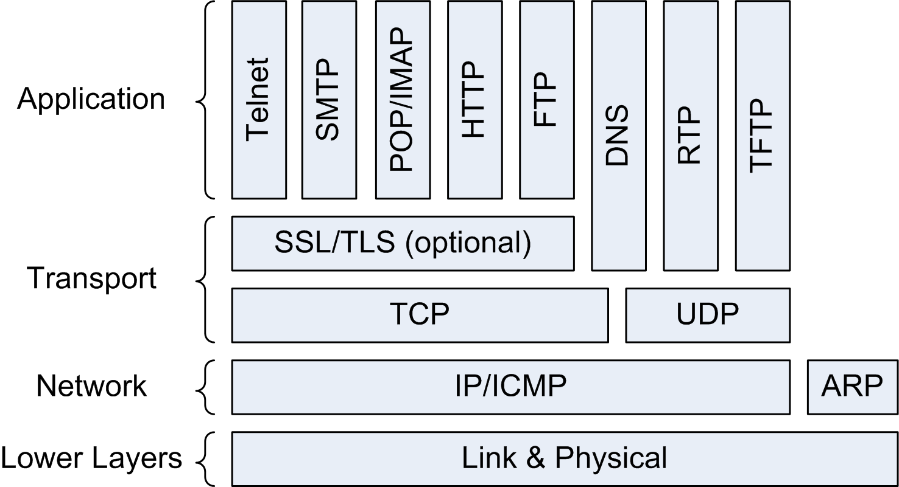
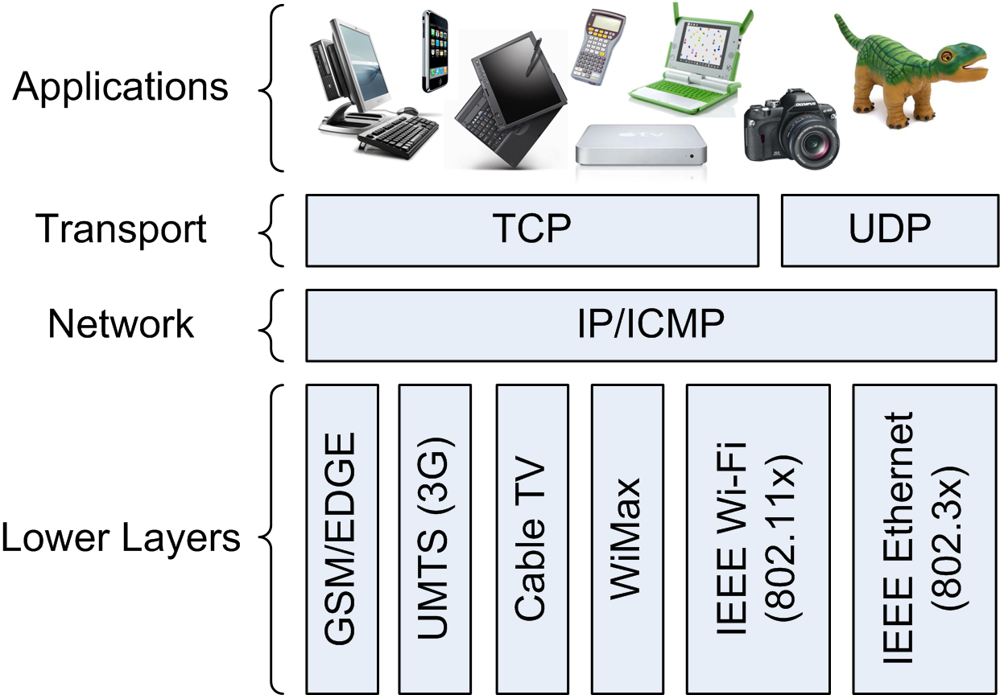

(2) Abstract
The Internet is the technical infrastructure on top of which the Web is built. Some of the services provided by the Internet are essential for the Web, most importantly the naming service and the data transfer service. The Domain Name System (DNS) provides the human-readable names for computers, which can then be used in the addresses of Web servers and ultimately Web pages. The Transmission Control Protocol (TCP) provides the reliable data transfer service between Web Servers and Web Browsers, building on the very robust Internet Protocol (IP).
Computer Networks
(4) Network History
- First regarded as a convenient workaround for floppy disks
real computer scientists write compilers
- the value of computer networks depends on their size
- Early networking solutions were vendor-specific islands
- DECnet for Digital Equipment Corporation (DEC) customers
- XNS for Xerox customers
- SNA for IBM customers
- transmitting data between these networks was very cumbersome
- Bridging networks transparently became increasingly important
- more computers and networks increase the benefit of interconnections
- layering being used for internetworks, not only for networks
(5) Networks vs. Internetworks
- Specific networks use specific abstractions
- how to address nodes (computers, phones, PDAs, RFID tags)
- how to address applications on these nodes
- how to transmit data to these applications
- Internetworks provide a network-independent abstraction
- nodes are addressed uniformly (IP addresses)
- applications are identified uniformly (ports)
- data transmission uses one set of protocols (TCP/UDP)
(6) Internet
- Very early start and a lot of experience
- pragmatic and evolutionary approach
if it's not broken, don't fix it
- Standardization by independent technical experts
- avoids the
designed by committee
effect of consortiums - conservative and concentrating on stability
- implementations are required to prove technical feasibility
- simplicity whenever possible
(7) Internet Principles
Be liberal in what you accept, and conservative in what you send.
[http://www.postel.org/postel.html],
[http://tools.ietf.org/html/rfc1122]
Whenever possible, communications protocol operations should be defined to occur at the end-points of a communications system, or as close as possible to the resource being controlled.
[http://dret.net/biblio/reference/sal84]
(8) Internet Protocols

(9) Network Convergence
